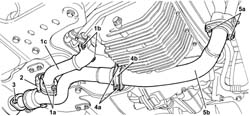

1076B52 exhaust pipe (one) leaving l/h or r/h exhaust manifold - r + r
- Path
- Procedures > 10 ENGINE > 1076 EXHAUST PIPES AND SILENCERS > 1076B exhaust pipes and silencers > 1076B52 exhaust pipe (one) leaving l/h or r/h exhaust manifold - r + r
- Kind
- repair procedure (removal / refitting; the operation number is the code)
- Applies to
- engines: 2.5 V6; all production periods
- Interactive page
- https://sloeber94.github.io/elrnDB-a156/en/#/3237573
Applies to: engines: 2.5 V6; all production periods
 Removing
Removing
 Refitting
RefittingPosition the vehicle on the ramp.
Raise the car.
For right hand pipe:
1. Unscrew nuts (1a) and (1b) and remove the exhaust pipe from the right exhaust manifold (1c).
Remove gaskets.
For left hand pipe:
2. Remove the lambda probe from the exhaust pipe from the left manifold and move aside.
3. Unscrew the nuts securing the exhaust pipe leading from the left manifold to the catalytic converter.
4. Undo the bolts (4a) and remove the lower collar (4b) of the exhaust pipe flexible mount.
5. Undo nuts (5a) and remove the exhaust pipe leading from left exhaust manifold (5b).
Remove gaskets.

Applies to: engines: 2.5 V6; all production periods
Refitting
RemovingFor left hand pipe:
Fit the exhaust pipe leaving the left exhaust manifold complete with gaskets and secure temporarily to the catalytic converter and exhaust manifold using the nuts.
Fit the lower collar of the exhaust pipe flexible mount and fix it using the bolts.
Tighten the bolts securing the exhaust pipe which emerges from the left exhaust manifold to the specified torque.
 | Fastening | Component | Ø | Value (daNm) |
|---|---|---|---|---|
- | Nut | EXHAUST PIPE FROM MANIFOLD | M8 | 2.5 |
Fit the Lambda sensor.
For right hand pipe:
Fit the exhaust pipe leaving the right exhaust manifold complete with gaskets and tighten the bolts to the specified torque.
| Fastening | Component | Ø | Value (daNm) |
|---|---|---|---|---|
- | Nut | EXHAUST PIPE FROM MANIFOLD | M8 | 2.5 |
Lower the vehicle.
Remove the car from the ramps.
Topics that link to this page (26)
- 1004B12 power unit with manual gearbox - r+r for versions with a/c
- 1008A44 rear rigid mount - r r
- 1008B20 power unit intermediate mount flexible block - replace
- 1016D25 rh cylinder head - r r and replace gasket for versions with air conditioner
- 1020A20 crank case oil sump - r + r clean seals for sealant application
- 1020D38 flywheel side oil seal - replace
- 1024B10 engine flywheel - r + r for versions with manual gearbox
- 1072C34 r/h exhaust manifold - r + r and replace seal
- 1076A32 exhaust rigid mount - r r
- 1076B12 exhaust pipe assembly r+r emission control versions
- 1084B16 engine oil pump - r+r vehicles with a/c
- 1084B23 oil pump control return - r r
- 1084C10 engine oil heat exchanger - r + r
- 2110A10 manual gearbox and differential - r + r
- 2130C38 oil seal for rh differential shaft - r r
- 2710A37 oil filter mount/intermediate drive shaft bearing - r+r
- 4130A13 POWER ASSISTED STEERING BOX - R.R. - If necessary. check wheel toe in separately - Includes. bleeding air - on right hand drive versions
- 4130B36 supply pipe from fluid resevior to power steering pump inlet pipe r r
- 4130B37 supply pipe from fluid resevior to power steering pump inlet pipe r r for right hand drive versions
- 4130B40 outlet pipe from pump to power steering case r r
- 4130B73 return pipe from power steering case to rigid intermediate pipe r r for right hand drive versions
- 4130B74 return pipe between power steering case and duplex pipes r r
- 5510C34 rpm and timing sensor (single) - r+r
- 5520B12 starter motor - r+r for versions with a/c
- 5530A14 alternator - r+r for versions with air conditioner
- 5030B26 lead between battery and starter motor - r+r